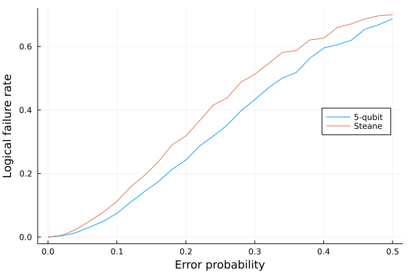

Qecsim.jl - Quantum Error Correction Simulator
Introduction
Qecsim.jl is a Julia package for simulating quantum error correction using stabilizer codes.
NOTE: Qecsim.jl is a ground-up rewrite of the Python package qecsim.
Installation
Qecsim.jl is installed, like any other registered Julia package, using the Julia package manager Pkg:
pkg> add Qecsim # Press ']' to enter the Pkg REPL mode.or
julia> using Pkg; Pkg.add("Qecsim")Examples
Simulation run
julia> using Qecsim, Qecsim.BasicModels, Qecsim.GenericModelsjulia> data = qec_run(FiveQubitCode(), BitFlipErrorModel(), NaiveDecoder(), 0.1; max_runs=100);┌ Info: qec_run: starting │ code = Qecsim.BasicModels.BasicCode(["XZZXI", "IXZZX", "XIXZZ", "ZXIXZ"], ["XXXXX"], ["ZZZZZ"], (5, 1, 3), "5-qubit") │ error_model = Qecsim.GenericModels.BitFlipErrorModel() │ decoder = Qecsim.GenericModels.NaiveDecoder(10) │ p = 0.1 │ random_seed = nothing │ max_runs = 100 └ max_failures = nothing [ Info: qec_run: rng=MersenneTwister(0x7c7e208db9d59009befe4975c1963b45) [ Info: qec_run: complete: data=Dict{Symbol, Any}(:error_weight_pvar => 0.4464, :time_steps => 1, :n_logical_commutations => [10, 5], :error_weight_total => 56, :wall_time => 0.002304829, :n_k_d => (5, 1, 3), :error_model => "Bit-flip", :physical_error_rate => 0.11199999999999999, :measurement_error_probability => 0.0, :error_probability => 0.1, :n_success => 90, :logical_failure_rate => 0.1, :custom_totals => nothing, :code => "5-qubit", :decoder => "Naive", :n_fail => 10, :n_run => 100)julia> dataDict{Symbol, Any} with 17 entries: :error_weight_pvar => 0.4464 :time_steps => 1 :n_logical_commutations => [10, 5] :error_weight_total => 56 :wall_time => 0.00230483 :n_k_d => (5, 1, 3) :error_model => "Bit-flip" :physical_error_rate => 0.112 :measurement_error_probability => 0.0 :error_probability => 0.1 :n_success => 90 :logical_failure_rate => 0.1 :custom_totals => nothing :code => "5-qubit" :decoder => "Naive" :n_fail => 10 :n_run => 100
Simulation plot
NOTE: This example assumes that Plots is installed.
julia> using Qecsim, Qecsim.BasicModels, Qecsim.GenericModels, Logging, Plotsjulia> with_logger(NullLogger()) do error_probabilities = 0.0:0.02:0.5 codes = [FiveQubitCode(), SteaneCode()] error_model = DepolarizingErrorModel() decoder = NaiveDecoder() max_runs = 5000 failure_rates = [[] for _ in codes] for p in error_probabilities, (code, f) in zip(codes, failure_rates) data = qec_run(code, error_model, decoder, p; max_runs=max_runs) push!(f, data[:logical_failure_rate]) end labels = reshape([label(c) for c in codes], 1, :) plot( error_probabilities, failure_rates; label=labels, legend=:right, xlabel="Error probability", ylabel="Logical failure rate" ) end;

Citing
Please cite Qecsim.jl if you use it in your research. It was first introduced in the following thesis:
- D. K. Tuckett, Tailoring surface codes: Improvements in quantum error correction with biased noise, Ph.D. thesis, University of Sydney (2020), (qecsim: https://github.com/qecsim/Qecsim.jl).
A suitable BibTeX entry is:
@phdthesis{qecsim,
author = {Tuckett, David Kingsley},
title = {Tailoring surface codes: Improvements in quantum error correction with biased noise},
school = {University of Sydney},
doi = {10.25910/x8xw-9077},
year = {2020},
note = {(qecsim: \url{https://github.com/qecsim/Qecsim.jl})}
}License
Qecsim.jl is released under the BSD 3-Clause license, see LICENSE.
Links
- Source code: https://github.com/qecsim/Qecsim.jl
- Documentation: https://qecsim.github.io/Qecsim.jl
- Contact: qecsim@gmail.com